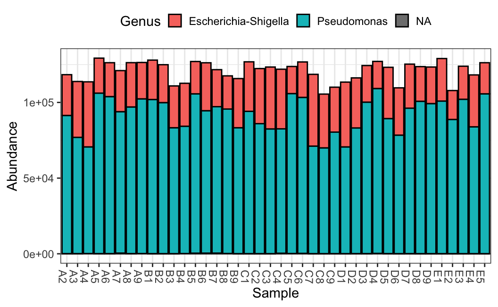
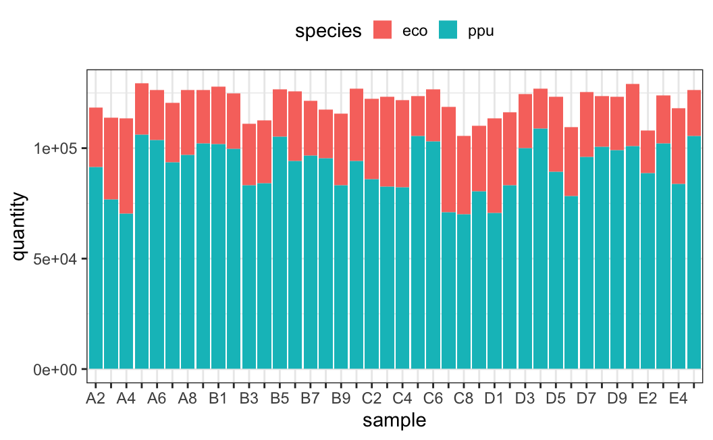
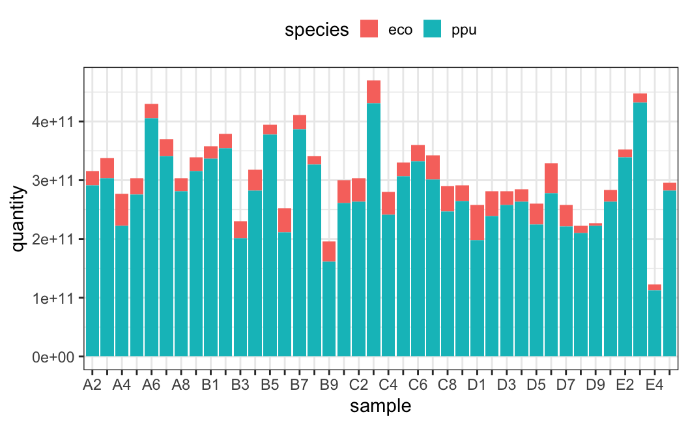
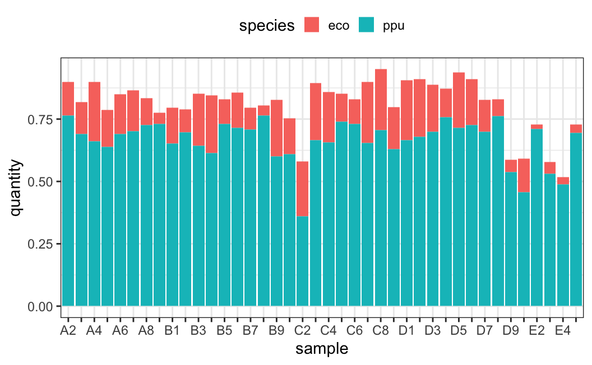
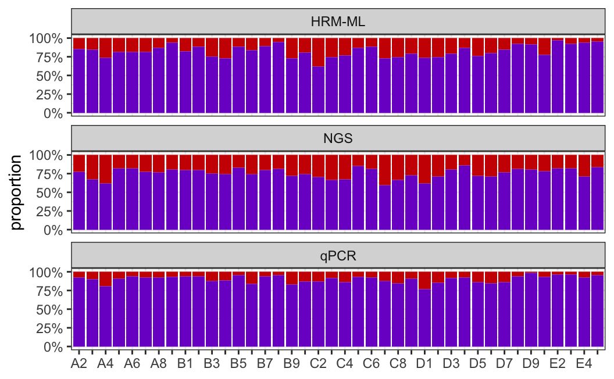
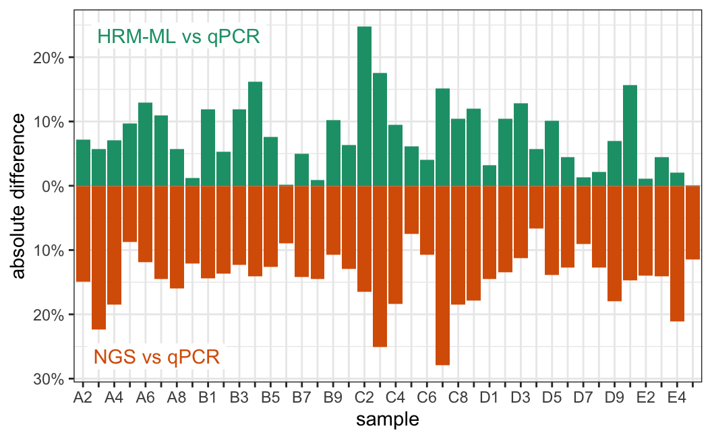
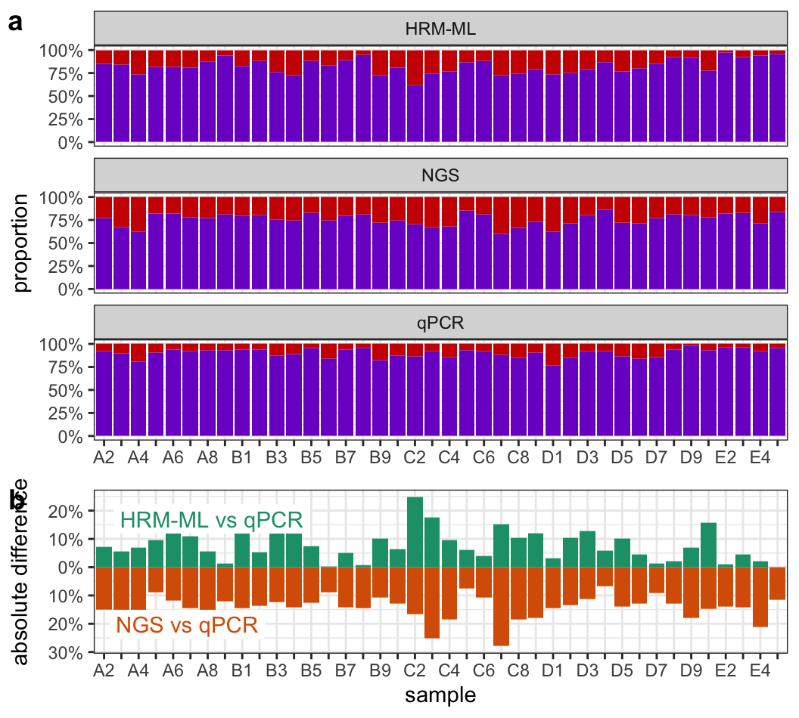

# load required packages
library(tidyverse)
library(tidymodels)
library(mcmodel)
library(cowplot)
# default theme
theme_set(theme_bw() +
theme(legend.key.size = unit(0.4,'cm'),
legend.key.height = unit(.4, 'cm')))
# global setting
strain_label = c("label_E", "label_P")
strain_name = c("EC","PP")
strain_color = c("red3", "purple3")
# well position
ec_single_well = paste0(rep(LETTERS[1:16], times = 3), rep(1:3, each = 16))
pp_single_well = paste0(rep(LETTERS[1:16], times = 3), rep(4:6, each = 16))
gradient_matrix_well = paste0(rep(LETTERS[1:16],times = 16), rep(7:22,each = 16))
strain_single_well = list(EC = ec_single_well, PP = pp_single_well)
# set seed
set.seed(0)6 Method Evaluation
Comparison of HRM-ML with two golden standards, strain-specific qPCR and 16S rRNA gene sequencing.
6.1 Global setting
Here we load packages and define several frequently used variables.
6.2 Functions
plot_syncom = function(data){
ggplot(data, aes(sample, quantity, fill = species)) +
geom_col() +
theme(legend.position = "top") +
scale_x_discrete(labels = function(x) {
x[seq(2, length(x), 2)] <- ""
x
})
}6.3 By 16S rRNA gene sequencing
Use DADA2 to process 16S rRNA gene sequencing data.
# raw data
dir = '/Volumes/Data/Projects/MbPL2024051607'
fastq_files = list.files(path = dir, pattern = ".merged.fastq.gz",
recursive = TRUE, full.names = TRUE)
sample.names = dirname(fastq_files) |> basename()
# filter and trim sequence
filt_path = file.path("./data-raw/application-ngs")
if (!dir.exists(filt_path)) dir.create(filt_path)
library(dada2)
for (i in seq_along(fastq_files)) {
fastq_filt = file.path(filt_path, basename(fastq_files[i]))
filterAndTrim(fastq_files[i], fastq_filt,
maxN = 0, maxEE = 2, truncQ = 2, rm.phix = TRUE,
compress = TRUE, multithread = TRUE)
}library(dada2)
ngs_path = "data-raw/application-ngs"
# learn error
err = learnErrors(ngs_path, multithread = TRUE, verbose = FALSE)104262362 total bases in 412108 reads from 3 samples will be used for learning the error rates.# denoise
dadaFs = derepFastq(ngs_path) |>
dada(err = err, multithread = TRUE)Sample 1 - 138894 reads in 6925 unique sequences.
Sample 2 - 135081 reads in 6290 unique sequences.
Sample 3 - 138133 reads in 6763 unique sequences.
Sample 4 - 146414 reads in 5969 unique sequences.
Sample 5 - 143670 reads in 5975 unique sequences.
Sample 6 - 140401 reads in 6060 unique sequences.
Sample 7 - 143489 reads in 6063 unique sequences.
Sample 8 - 143486 reads in 5979 unique sequences.
Sample 9 - 146415 reads in 5965 unique sequences.
Sample 10 - 142644 reads in 5907 unique sequences.
Sample 11 - 131972 reads in 6048 unique sequences.
Sample 12 - 135238 reads in 6653 unique sequences.
Sample 13 - 142180 reads in 5674 unique sequences.
Sample 14 - 146281 reads in 6423 unique sequences.
Sample 15 - 136775 reads in 5558 unique sequences.
Sample 16 - 131760 reads in 5484 unique sequences.
Sample 17 - 133423 reads in 5706 unique sequences.
Sample 18 - 146130 reads in 6135 unique sequences.
Sample 19 - 142953 reads in 6105 unique sequences.
Sample 20 - 146291 reads in 6521 unique sequences.
Sample 21 - 146326 reads in 6745 unique sequences.
Sample 22 - 140786 reads in 5726 unique sequences.
Sample 23 - 145401 reads in 6248 unique sequences.
Sample 24 - 142975 reads in 6594 unique sequences.
Sample 25 - 125641 reads in 5031 unique sequences.
Sample 26 - 126698 reads in 4575 unique sequences.
Sample 27 - 135369 reads in 5247 unique sequences.
Sample 28 - 138824 reads in 5184 unique sequences.
Sample 29 - 143340 reads in 4895 unique sequences.
Sample 30 - 141025 reads in 4419 unique sequences.
Sample 31 - 144200 reads in 5132 unique sequences.
Sample 32 - 128555 reads in 4814 unique sequences.
Sample 33 - 147407 reads in 4984 unique sequences.
Sample 34 - 140217 reads in 4539 unique sequences.
Sample 35 - 141868 reads in 4729 unique sequences.
Sample 36 - 147145 reads in 5012 unique sequences.
Sample 37 - 122510 reads in 4288 unique sequences.
Sample 38 - 138030 reads in 4386 unique sequences.
Sample 39 - 135522 reads in 4804 unique sequences.
Sample 40 - 139861 reads in 4406 unique sequences.names(dadaFs) = gsub(".merged.fastq.gz", "", names(dadaFs))
# build sequence table
seqtab = makeSequenceTable(dadaFs)
# remove chimera
seqtab.nochim = removeBimeraDenovo(seqtab,
method = "consensus",
multithread = TRUE)
# assign taxonomy
silva_train_set = "~/Projects/Silva/silva_nr99_v138.1_train_set.fa.gz"
taxa = assignTaxonomy(seqtab.nochim, silva_train_set, multithread = TRUE)To use Silva database in assignTaxonomy(), you should download it at https://benjjneb.github.io/dada2/training.html.
# build phyloseq object
library(phyloseq)Registered S3 method overwritten by 'vegan':
method from
print.nullmodel parsnipps = phyloseq(otu_table(seqtab.nochim, taxa_are_rows = FALSE), tax_table(taxa))
# merge low abundant noise
taxa_sums = taxa_sums(ps)
threshold = 0.001 * sum(taxa_sums) # threshold is 0.1%
low_abundance = taxa_sums < threshold
ps_merged = merge_taxa(ps, taxa_names(ps)[low_abundance])
# plot community
plot_bar(ps_merged, fill = "Genus") +
theme(legend.position = "top")
tax_structure = otu_table(ps_merged) |>
as.data.frame() |>
tibble::rownames_to_column("sample") |>
as_tibble()
colnames(tax_structure)[2:4] = c("ppu","eco","others")
sequencing_result = tax_structure |>
pivot_longer(cols = -sample, names_to = "species", values_to = "quantity") |>
filter(species != 'others') |>
mutate(method = 'NGS')
plot_syncom(sequencing_result)
6.4 By strain-specific qPCR
- Build standard curve
- Calculate strain abundance
library(mcmodel)
# read qPCR results
result = read_quantstudio(xfun::magic_path("application-qPCR-result.txt")) |>
get_quantstudio_result() |>
select(well_position, ct) |>
mutate(ct = as.numeric(ct))Warning: There was 1 warning in `mutate()`.
ℹ In argument: `ct = as.numeric(ct)`.
Caused by warning:
! NAs introduced by coercion# read plate layout
plate = read.csv(xfun::magic_path("application-plate-layout.csv"))
# combine results and plate layout
result = result |> left_join(plate, by = "well_position")std_quantity = tibble(
well_position = paste0(rep("P", 24), 1:24),
log2quantity = (rep(2E9, 24)/rep(10^(0:7), each = 3)) |> log2()
)
std_sample = result |>
filter(target == 'std') |>
select(well_position, ct) |>
left_join(std_quantity, by = "well_position") |>
select(ct, log2quantity) |>
na.omit()std_fit = lm(log2quantity ~ ct, std_sample)
summary(std_fit)
Call:
lm(formula = log2quantity ~ ct, data = std_sample)
Residuals:
Min 1Q Median 3Q Max
-0.35894 -0.06547 0.03517 0.09160 0.17017
Coefficients:
Estimate Std. Error t value Pr(>|t|)
(Intercept) 46.71115 0.23581 198.09 < 2e-16 ***
ct -0.91748 0.01024 -89.58 7.35e-16 ***
---
Signif. codes: 0 '***' 0.001 '**' 0.01 '*' 0.05 '.' 0.1 ' ' 1
Residual standard error: 0.1435 on 10 degrees of freedom
Multiple R-squared: 0.9988, Adjusted R-squared: 0.9986
F-statistic: 8025 on 1 and 10 DF, p-value: 7.35e-16unk_sample = result |>
filter(target %in% c('EC','PP'))
unk_sample_predition = broom::augment(std_fit, newdata = unk_sample)qPCR_result = unk_sample_predition |>
summarise(predict = mean(.fitted, na.rm = TRUE), .by = c(sample, target)) |>
mutate(species = if_else(target == 'EC', 'eco', 'ppu'),
quantity = 2^predict,
method = 'qPCR') |>
select(sample, species, quantity, method)plot_syncom(qPCR_result)
6.5 By HRM-ML method
filename = xfun::magic_path("application-qPCR-result.txt")
plate = read.csv(xfun::magic_path("application-plate-layout.csv"))
all = read_quantstudio(filename)
sample = plate |>
mutate(cycle = 30) |>
dplyr::filter(target == '16S')
mc240617 = quantstudio2mc(all, plate = sample) |>
filterData(from = 75, to = 90, well_position = sample$well_position) |>
transformData(step = 0.1)
data240617 = mc_tbl2wider(mc240617)
write_csv(data240617, "data-clean/20240617.csv")# data
train_data = read.csv("data-clean/20230512.csv") |>
dplyr::filter(well_position %in% gradient_matrix_well,
cycle == 30, rep == 1) |>
dplyr::select(starts_with('label_'), starts_with('T')) |>
mutate(label_E = log2(label_E), label_P = log2(label_P))
# test data
test_data = read.csv("data-clean/20240617.csv")
library(parsnip)
library(recipes)
library(workflows)
rf_spec = rand_forest(mode = "regression", trees = 1000) |>
set_engine("ranger", importance = 'impurity', num.threads = 10)
predictions = lapply(seq_along(strain_label), function(i){
label = strain_label[[i]]
train = train_data |> select(matches(label), starts_with("T"))
recipe = recipe(formula = as.formula(paste(label, '.', sep = '~')),
data = train)
rf_wflow = workflow() |>
add_recipe(recipe) |>
add_model(rf_spec)
rf_fit = rf_wflow |>
fit(train)
prediction = augment(rf_fit, new_data = test_data) |>
select(-starts_with("T")) |>
mutate(label = strain_label[[i]])
return(prediction)
})
HRM_result = predictions |>
bind_rows() |>
summarise(.pred = mean(.pred), .by = c(sample, label)) |>
mutate(species = if_else(label == 'label_E', 'eco', 'ppu'),
quantity = 2^.pred,
method = 'HRM-ML') |>
select(sample, species, quantity, method)HRM_result |> plot_syncom()
6.6 Comparison
three_result = list(qPCR_result, sequencing_result, HRM_result) |>
bind_rows() |>
group_by(method, sample) |>
mutate(prop = quantity/sum(quantity)) |>
ungroup()p_prop = ggplot(three_result, aes(sample, prop, fill = species)) +
geom_col() +
facet_wrap(~method, ncol = 1) +
scale_y_continuous(labels = scales::percent) +
scale_x_discrete(labels = function(x) {
x[seq(2, length(x), 2)] <- ""
x
}) +
scale_fill_manual(values = strain_color) +
labs(x = NULL, y = "proportion") +
theme(legend.position = "none")
p_prop
library(tidyr)
ec_prop = three_result |>
filter(species == 'eco') |>
pivot_wider(id_cols = sample, names_from = method, values_from = prop) |>
na.omit()
cor(ec_prop |> select(-sample), method = "spearman") qPCR NGS HRM-ML
qPCR 1.0000000 0.7851782 0.7803002
NGS 0.7851782 1.0000000 0.7166979
HRM-ML 0.7803002 0.7166979 1.0000000ec_prop_difference = ec_prop |>
rowwise() |>
mutate(qPCR_vs_mc = mean(abs(qPCR - `HRM-ML`)),
qPCR_vs_ngs = -mean(abs(qPCR - NGS))) |>
pivot_longer(cols = starts_with('qPCR_vs'),
names_to = 'comparison',
values_to = 'abs_distance')
# mean absolute differences
ec_prop_difference |> summarise(average = mean(abs(abs_distance)), .by = comparison)# A tibble: 2 × 2
comparison average
<chr> <dbl>
1 qPCR_vs_mc 0.0790
2 qPCR_vs_ngs 0.144 p_diff = ec_prop_difference |>
ggplot(ggplot2::aes(sample, abs_distance, fill = comparison)) +
geom_col() +
scale_x_discrete(labels = function(x) {
x[seq(2, length(x), 2)] <- ""
x
}) +
annotate("label", x = -Inf, y = Inf,
label = "HRM-ML vs qPCR",
hjust = -0.1, vjust = 1.5, label.size = NA,
color = "#1B9E77") +
annotate("label", x = -Inf, y = -Inf,
label = "NGS vs qPCR",
hjust = -0.1, vjust = -0.5, label.size = NA,
color = "#D95F02") +
labs(y = "absolute difference") +
scale_y_continuous(labels = function(x) scales::percent(abs(x))) +
scale_fill_manual(values = c("#1B9E77", "#D95F02")) +
theme(legend.position = "none")
p_diff
plot_grid(p_prop, p_diff, align = "v", ncol = 1,
rel_heights = c(2, 1),
labels = "auto")
ggsave("figures/figure5.jpg")Saving 5.5 x 4.95 in image